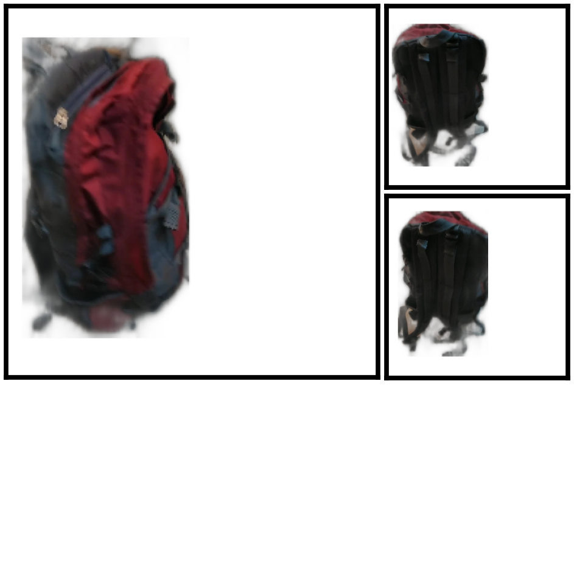
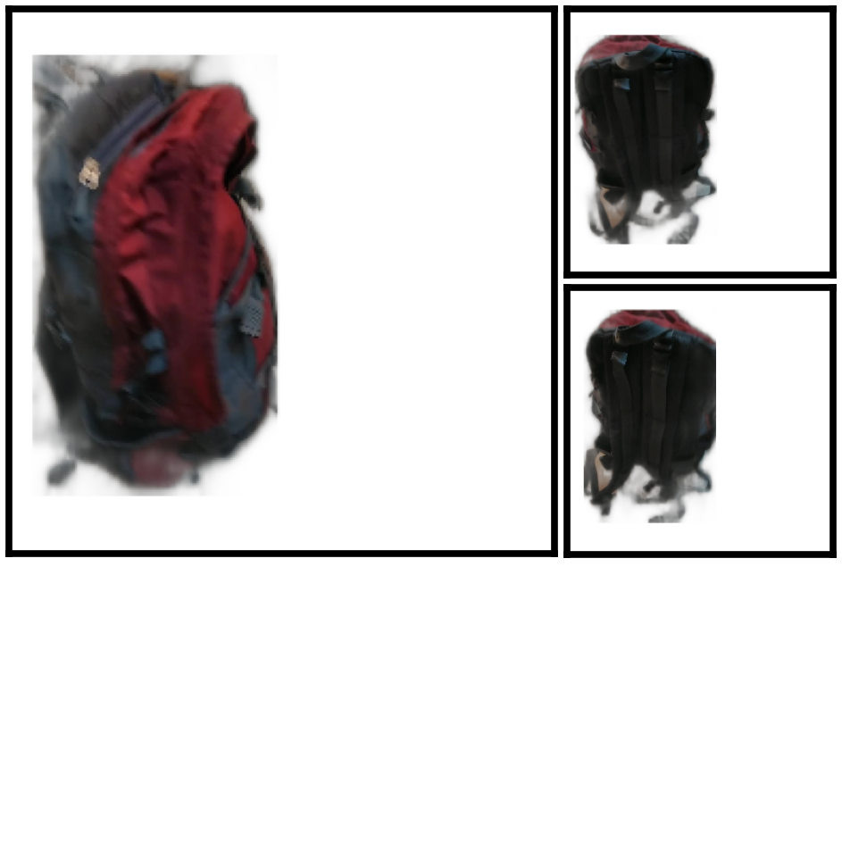
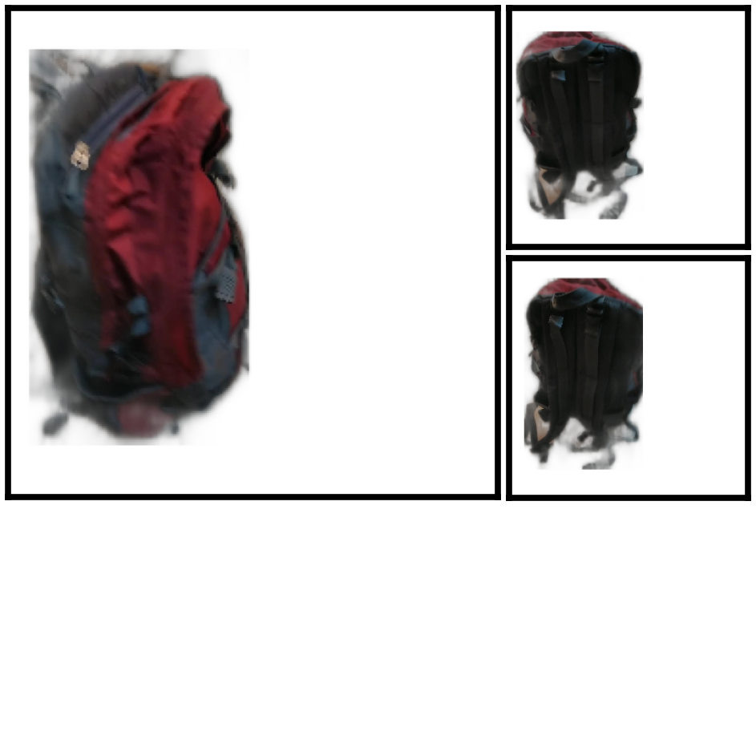
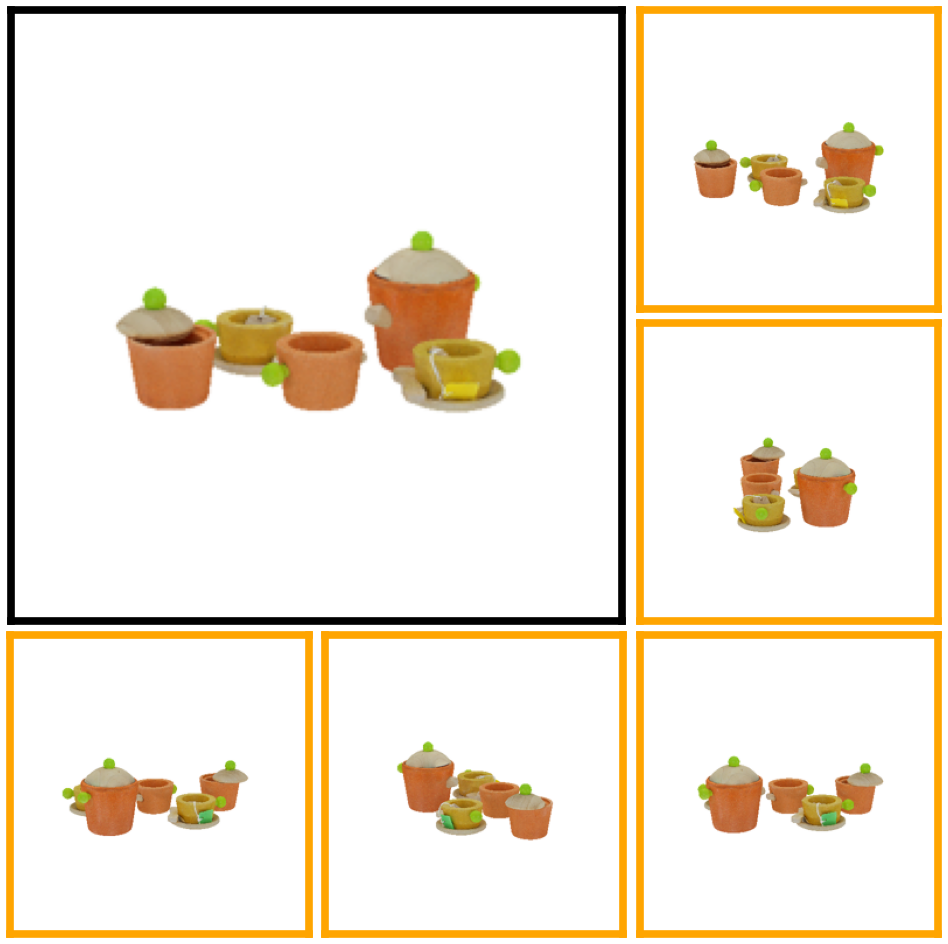
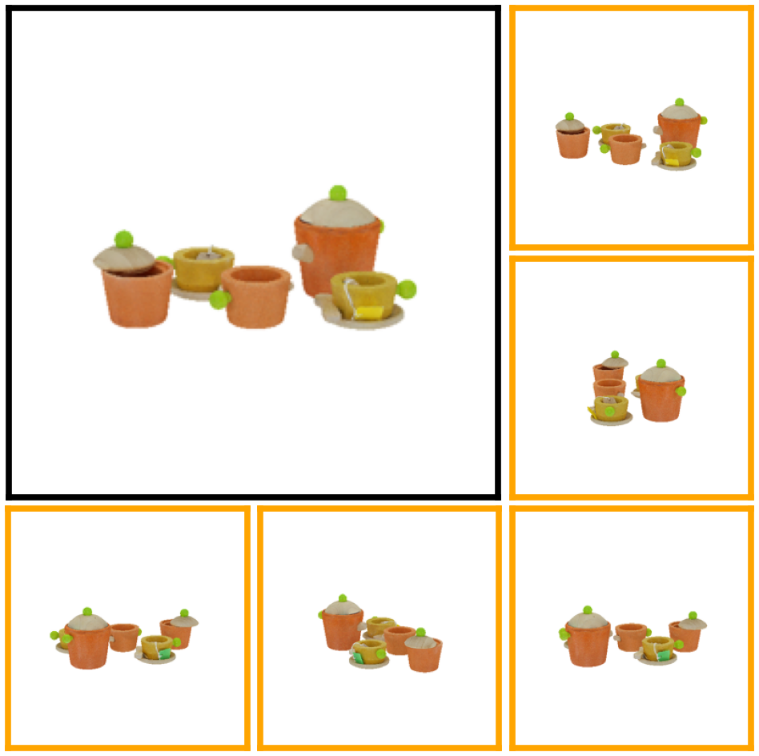

Input Images
 

We propose UpFusion, a system that can perform novel view synthesis and infer 3D representations for an object given a sparse set of reference images without corresponding pose information.
Current sparse-view 3D inference methods typically rely on camera poses to geometrically aggregate information from input views, but are not robust in-the-wild when such information is unavailable/inaccurate. In contrast, UpFusion sidesteps this requirement by learning to implicitly leverage the available images as context in a conditional generative model for synthesizing novel views.
We incorporate two complementary forms of conditioning into diffusion models for leveraging the input views: a) via inferring query-view aligned features using a scene-level transformer, b) via intermediate attentional layers that can directly observe the input image tokens. We show that this mechanism allows generating high-fidelity novel views while improving the synthesis quality given additional (unposed) images.
We evaluate our approach on the Co3Dv2 and Google Scanned Objects datasets and demonstrate the benefits of our method over pose-reliant sparse-view methods as well as single-view methods that cannot leverage additional views. Finally, we also show that our learned model can generalize beyond the training categories and even allow reconstruction from self-captured images of generic objects in-the-wild.
Our diffusion model learns to generate novel views of an object by leveraging the internal representations of UpSRT as condition information. For more details, please refer to our paper.
Here, we compare UpFusion 3D to competitive sparse-view baselines on the Co3Dv2 dataset. Please use the dropdown menu to compare against different methods.

Here, we compare UpFusion 3D (while using six input views) to competitive single-view baselines, and one sparse-view baseline on the GSO dataset. Please use the dropdown menu to compare against different methods.
 


@article{upfusion2023,
author = {Nagoor Kani, Bharath Raj and Lee, Hsin-Ying and Tulyakov, Sergey and Tulsiani, Shubham},
title = {UpFusion: Novel View Diffusion from Unposed Sparse View Observations},
journal = {arXiv preprint arXiv:2312.06661},
year = {2023},
}